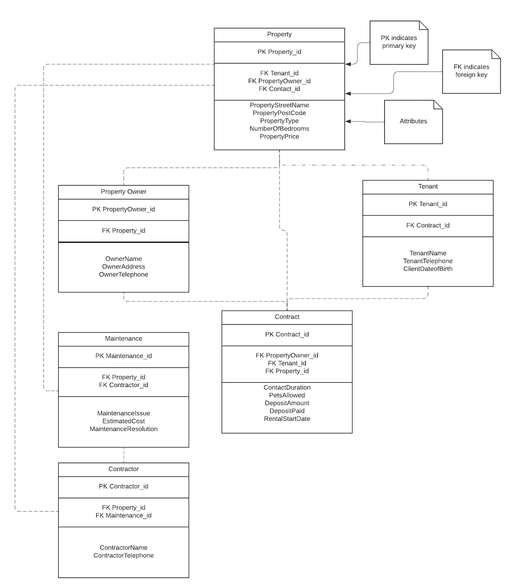
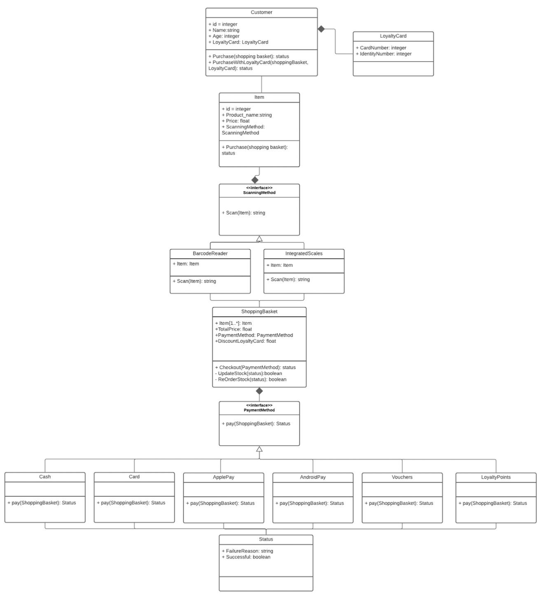
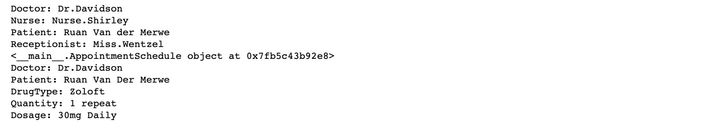

Features
Identify an instance of a failure with an information system, with a focus on the reasons for the failure.
The Hacking of the British Healthcare System
An information system is used to store, manipulate and process data. The Health Service Computers in the United Kingdom make up an information system. The National Health System (NHS) is responsible for storing all medical information, such as records and client details. In 2017, the National System was hacked, where the hackers demanded a ramson to be paid out in Bitcoin. The hackers took control of the entire system locking everyone else out. This was hugely detrimental to the health system in the United Kingdom. This was a result of poor IT security measures (Alex Hern, 2017).
learn more
There was an investigation into the cyber-attack, where it is known that “19,500 medical appointments were cancelled, computers at 600 GP surgeries were locked and five hospitals had to divert ambulances elsewhere” (Alex Hern, 2017). The truth is, the information system was not properly protected and was easy to intercept. The type of malware used for the attack is known as WannaCry. This is a worn that can be transferred directly from one machine to another. The infected computers hard drives became encrypted making it unreadable. Luckily, a security specialist was able to detect and “activate a kill switch” (Alex Hern, 2017).
Overall, the attack lasted for several days and had a crippling effect on hospitals and other healthcare facilities. The attack could have been avoided if the correct security measures were in place to highlight vulnerabilities. Following the incident, the NHS was supplied with government funding so that the system’s security could be improved to avoid future cyber-attacks.
References
1. Hern, A. (2017) NHS could have avoided WannaCry hack with 'basic IT security', says report. The Gaurdian. Available from: https://www.theguardian.com/technology/2017/oct/27/nhs-could-have-avoided-wannacry-hack-basic-it-security-national-audit-office#:~:text=In%20March%20and%20April%202017,enabled%20WannaCry%20to%20rapidly%20spread.&text=Before%20the%20attack%2C%20NHS%20Digital,236%20health%20trusts%20in%20England [Accessed 13 Nov 2021)
2. Acronis. (2017) The NHS Cyber Attack. Acronis.com. Available from:
https://www.acronis.com/en-us/articles/nhs-cyber-attack/ [Accessed 13 Nov 2021)
Normalisation in Practive
The aim of this activity is to allow you to gain some experience normalising a set of tables. This table reflects the normalisation of the database using the third normal form (3NF).
Mid-Module Assignment: System Design
Rationale
Unified Modeling Language (UML) aids in the maintenance of software, by visually representing the way in which the software will behave (Alsarraj, Altaie, Fadhil, 2021). UML visually displays the separation of components and their relationship to one another. Moreover, UML allows you to easily extract the necessary information during the debugging process and the maintenance of software. Overall, “UML is considered as one of the standard modelling notations that is utilized for representing software as graphical notations. (Alsarraj, Altaie, Fadhil, 2021).
learn more
UML has been advantageous amongst software developers, as it increases understanding and communication between team members. Additionally, UML can create a notation framework for incorporating both elements of design and software engineering. This is because UML allows you to understand interactions and analyse software usability in a graphical manner (Kovacevic, 1999). Technological trends in popular culture are seen as both advantageous and destructive. Evidently, technologies role in the health system, specifically AI, is paramount. Although, artificial intelligence supports humankind, many people remain sceptical of long term ramifications. Further investigation is needed to understand user satisfaction regarding the success of technologies, such as exoskeletons. Questions need to be raised pertaining to a user’s quality of life and whether the benefits out way any adverse effects. (Platz, 2016) Thus, human-robot interaction raises social concerns, particularly that of safety, trust and overall well-being.
A Software System Design for a Self-Service Checkouts
The following design is based on Unified Modeling Language (UML) principles. UML “helps you specify, visualize, and document models of software systems, including their structure and design” to meet certain criteria (UML, 2005). The following design makes use of UML to define and display the way in which the system will function and work based on classes and their relationships.
Self-Service system classes
The customer The customer is the primary class. The customer class has the following attributes: name, age and whether or not they have a loyalty card. The customer’s purpose is to execute the following operation (method); to purchase an item in the store. Loyalty card The loyalty card class has a strong association with the customer class. This is because the loyalty card class’s existence is dependent on the customer class. The loyalty card has the following attributes: an identity number (to make sure it associated with the correct customer) and a card number (identifies the card details). Item This class identifies the items available for purchase. The item has the following attributes: product name, a price and scanning method allowing you to buy the product. The item needs to be added to the shopping basket and return a status. Scanning method (interface) The scanning method is an interface that cannot exist without the Item class. This is because you need an item in order to scan it and add it to the virtual shopping basket. Barcode reader The barcode reader class operation is to scan a barcode to identify an item. This class inherits the attributes from the scanning method. This is known as a generalization relationship. Integrated scales The integrated class operation is to weigh an item and price it accordingly. This class inherits the attributes from the scanning method. This is also an example of a generalization relationship. Shopping basket The shopping basket class takes in an item, where an infinite number of items can be added to the virtual shopping cart. Payment method (interface) The payment method interface allows you select a type of payment when choosing to pay for your items in the shopping cart, whilst considering if you have a loyalty card or not. If you have a loyalty card, you may receive a deduction. Cash, Card, ApplePay, AndroidPay, Vouchers, Loyalty Points The different payment method classes allow you to purchase the items in your shopping cart and return a status based on stock availability. The stock availability is not public and can only be viewed by a staff member. These classes inherit the attributes from the base class (payment method). Status The status class determines whether the purchase was successful or unsuccessful. If the purchase is unsuccessful due to an individual’s age or scanning error, it will return a failure reason. Alternatively, the purchase is successful and returns a Boolean to determine whether there is stock is still available in the store (true) or it needs to be reordered (untrue). 
References
1. Alsarraj, Altaie, Fadhil, R.A.A (2021). ‘Designing and implementing a tool to transform source code to UML diagrams’ Periodicals of Engineering and Natural Sciences. March 2021. University of Mosul Iraq. DOI: http://dx.doi.org/10.21533/pen.v9i2.1829 [Accessed 14 January 2022]. 2. Downey, A. (2015) Think Python: How to Think Like a Computer Scientist. 2nd ed.Needham, Massachusetts: Green Tea Press. Available from: https://greenteapress.com/thinkpython2/thinkpython2.pdf [Accessed 14 January 2022]. 3. Kovacevic S. (1999) UML and User Interface Modeling. In: Bézivin J., Muller PA. (eds) The Unified Modeling Language. «UML»’98: Beyond the Notation. UML 1998. Lecture Notes in Computer Science, vol 1618. Springer, Berlin, Heidelberg. https://doi.org/10.1007/978-3-540-48480-6_20 4. Unified Modeling Language. (2005) What is UML. Available at: https://www.uml.org/what-is-uml.htm [Accessed 14 January 2022].
▲
System Implementation
Assignment Brief
learn more
An algorithmic solution for a class diagram using python
System Implemetation
1. Create a class for patient and assign it the relevant attributes. The patient is required to complete the following operations; request a repeat prescription and make an appointment with the doctor.
2. Create a healthcare proffessional class. The healthcare proffessional class is made up of two sub classes: doctor and nurse, where all healthcare proffessionals need an employee number and a name.
3. Create a prescription class, where you need the following attributes to create a script for a patient: type of drug, patient, doctor, quantity and a dosage.
4. Create a class for the receptionist. The receptionist is required to make an appointment for a patient, issue them a prescription on request and have the ability to cancel an appointment. The receptionist is identified by their name and employee number.
5. Create a method for making an appointment and attaching it to the appointment schedule.
6. Create a method for requesting a prescription.
7. Create a method for deleting an appointment from the appointment schedule.
Run your code
You can copy and run this code in any source code editor, as long as you save it as a python file.
Debug your code
You are able to debug your code and run it in the terminal in order to test for errors.
Results
I made use of Jupyter Notebook to run and view code outputs.
References
Phillips, D. (2018) Python 3 Object-Oriented-Programming. Third Edition. Birmingham: Packt Publishing ltd. Available via the Vitalsource Bookshelf. [12 February 2022]
▲Module Reflection
Assignment Brief
I understand Object-Orientated Programming in computing as the organization of data into objects that have unique attributes and behaviors. We can use Object-Orientated programming to understand, manipulate, process and store data in a readable manner. I learnt from the beginning of the module that data can turn into information, which then becomes knowledge. This is done by assigning data meaning when processing it. Overall, “we can say information is data plus meaning.” (Essex Online, 2021).
Data holds value and is prevalent in modern society. We used data based systems in our day to day lives, such as online shopping applications. Seeing that information systems are so widely used, they have a moral responsibility to ensure they function correctly. For instance, an information system was used to keep record of United States prisoners, involving their sentence and behaviour. The system was relied on to see whether or not a prisoner’s documented good behaviour could lead to a reduction in their sentence. Since 2002, the system had been faulting and this went undetected for 13 years. The system was malfunctioning and allowing prisoners to be released earlier than they should have been. This highlights the importance of a well-planned information system to ensure correct functionality.
1. Baseline (2003) Hospital Revives its Dead Patients. Available from: https://www.baselinemag.com/c/a/Projects-
2. Networks-and-Storage/Hospital-Revives-Its-QTEDeadQTE-Patients [Accessed: 14 November 2021]
BBC (2015) US Prisoners Released Early by Software Bug. Available from: https://www.bbc.co.uk/news/technology- [Accessed: 14 November 2021]
3. Shelly, B., Cashman, T. & Rosenblatt, H.(2006) Systems Analysis and Design: Sixth Edition. Chapter 1. Thomson Course Technology Course.
4. Sommerville I. (2015) Software Engineering. 10th. ed. Essex: Pearson.
learn more
The fundamentals of Object- Orientated Programming are the ability to define a class, assign attributes to a class, along with operations. Attributes can be broken up into different data types, for instance integers or a string. An operation is made up of parameters. There are also different forms of association between classes. There is generalization, where one class inherits the attributes of a parent class. Composition indicates a strong relationship between classes, where a class is dependent on the existence of another class. Aggregation is when two classes do not rely on the existence of another, and instead can exist completely independently.
I found the mid-module assignment to be a great way to visually understand the relationships between classes. I felt that providing a visual solution to self-service checkout systems for customers was an informative way to learn about objects and how they interact with one another. Overall, I felt that Unified Modelling Language (UML) allows you to easily identify an error and improves the debugging process and maintenance of the information system.
I found the next assignment, where we required to implement an object-orientated system more difficult. This is because I found it hard to translate a visual diagram into readable python code. I feel that I have a moderate understanding of python conventions. However, I believe I could improve on my skills by doing further testing and catering for different cases where applicable. My feedback also highlighted, that it would be advantageous to break up my solution into different source files. This is something I will work on implementing in the future.
We revisited SQL in this module. I really enjoy SQL and feel it something I understand well when it comes to communicating, storing and manipulating data in a table format. We were then introduced to web development. Web development is something I am familiar with and have engaged with in my work environment. I am familiar with basic web development and am proficient in HTML, CSS and JavaScript. I found the introduction to Flask as a micro web framework to be useful. I learnt that the route is seen as a controller in Flask, where it will direct us to a particular space to perform certain functions. Flask allows you to create a server where a web application exists and is created using python code.
Overall, I found the module intellectually stimulating and at times challenging. I believe I was able to explore many aspects of Object-Orientated Programming and found the material was well scripted. I feel the assignments are crucial, and where I gain most of my knowledge, as I am required to understand and apply what I have learnt. Nevertheless, I felt I could have managed my time better and would have benefitted from engaging more with my peers. I look forward to continuously learning and improving.
References